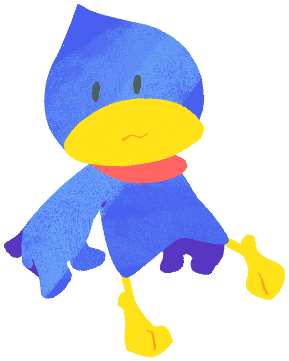

Chikurin (Male)One of Kururin's younger brothers, and one that bears a slight similarity to him due to the color of his feathers and his height. He is very honest, sometimes brutally so. He is considered the "best student" in his school, but he has a bad sense of direction that makes him easily get lost, even when it's obvious on where to go. His hair makes his head in the shape of a water droplet. |
 |